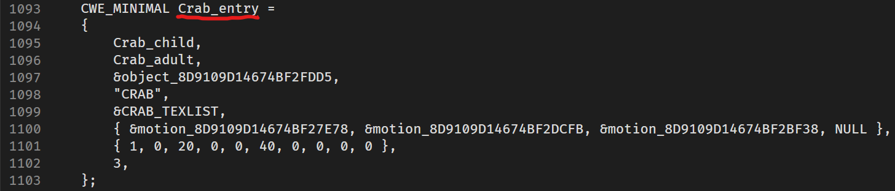

Custom Animal Mods
Pre-requisites:
- Have completed the Making a DLL Project section
- version 4.2 of Blender
- Intermediate 3D Theory
- Basic C++ Programming skills
- SA Tools (Make sure you've created an SA Tools Project!)
- Chao World Extended (Versions > 9.5)
- An existing fruit mod.
- Patience
Tools can be downloaded here
Credit
Massive credit to Erubbu who wrote the initial guide on Animal Modding, which this guide would be impossible to compile without!
What is an "Animal"?
Custom Animals are an extension of the Chao Animal system, where you can give a Chao the animal for it to absorb the animal and gain some of its parts randomly. Chao World Extended introduced custom animals from version 8.0, and allowed for customization from version 8.5. Animals spawn from fruit when looking away from the fruit.
Custom Animals require a Fruit Mod so be sure to have created one before proceeding!
Before we start:
- Delete all default scene objects! These objects will crash your game if you do not delete them.
- Make sure SAIO is up to date! As of writing, SAIO 2.1.5 is the most recent. Keeping SAIO and Blender up-to-date will help anyone helping you eliminate issues.
- Make sure SAIO is enabled in the Addons menu! If not, go to Edit -> Preferences and go to the Addons menu to install/enable "Import-Export: Sonic Adventure I/O"
- If SAIO errors out on any operation, and it complains about .NET runtime, install the Microsoft .NET Runtimes as instructed by the SAIO Documentation.
Preparations
You will need the following before progressing further:
- An existing Fruit mod
- The Animal Editor Tool by Exant here
Modelling
Animal
Import an animal from the Chao/Animals folder in your SA Tools Project. Any model will do, as long as the prefix is "MINIMAL" and ends in ".SA2MDL". This will give you the required scale for reference of your model.
Create the animal you want to add into the game, using the scale of the imported model as a reference of how large the animal has to be. Make sure to UV and texture the model as necessary.
Create an Empty (Plain Axes is recommended) object at world origin (0, 0, 0) and parent all your animal meshes to the Empty object that was created. Make sure that your animal's feet are on the "floor" (0 on the Z axis) of world space, so that the animal appears in the right location.
Apply Scale and Rotation of your model, and make sure your model is complete at this point. Save your model in case anything goes wrong.
Select the Empty object, and go to SAIO Tools -> Armature from Objects. Press OK on the dialogue box to generate a new armature. Delete the original Empty hierarchy as we no longer need it. (You can create an incremental save in File -> Save Incremental as this is the start of your modding process)

Your armature now needs to be tweaked so that the head of each of the bones are in the corect position. Select the head of each of the bones and move them as appropriate in Edit Mode. This step is optional, but will help for animating your rig when you get to that step.
Save and export your animal as the SA2MDL format. This model will be used for the Animal Editor tool.
Animation
There are 3 sets of animation for animals. The table below describes how many frames of animation are needed, as well as what animation types need to be keyed and created as "animation nodes":
| Animation Type | Frames required |
|---|---|
| Stand | 4 Frames |
| Walk | 15 Frames |
| Hold/Use | 14 Frames |
Set your initial keyframe at 0, and the ending keyframe at the required number of frames. Animate as necessary, making sure the interpolation mode of your animation is set to linear (select your frames, press T, select "linear"). Don't worry if the animation looks like it's "jumping" from one pose to another in Blender; in-game, the animation will tween to each frame at 9-15 fps.
When doing the animation, do 1 cycle of movement. (for example; the animal is moving their left and right foot only once for 15 frames) (for another example; the animal is moving up and down once for 14 frames) Doing more than 1 would result in the animal moving "super fast" when preforming their animations.
Go to SAIO Tools -> Export -> Export Node Animation to each animation separately. This will save it as an .SAANIM file needed for the Animal Editor tool.
Chao
Import a Chao model of your choice, starting with a Child Chao. Prepare the animal parts you wish to add to the Chao, hiding the original Chao body parts as you go along. You will need to name the body parts a specific way, so that the Animal Edior can recognize them on import. These names are case sensitive!
| Body Part | Object Name | Constraint Index |
|---|---|---|
| Left Arm | arm_l | 003 |
| Right Arm | arm_r | 010 |
| Left Ear | ear_l | 024 |
| Right Ear | ear_r | 026 |
| Left Leg | leg_l | 006 |
| Right Leg | leg_r | 013 |
| Face | tongue | 028 |
| Forehead | forehead | 029 |
| Tail | tail | 008 |
| Left Wing | wing_l | 037 |
| Right Wing | wing_r | 039 |
| Left Horn | horn_l | 030 |
| Right Horn | horn_r | 031 |
Constrain each part to their respective "Empty" parent object (Add an Object Constraint, with the constraint being "Child of", and within "Target", type in the part's constraint index and select the object with the matching number). Make sure to apply all transforms. Also remember to click "Clear Inverse" for all contraints.
A Warning about 'clearing inverse'
Clicking on "clear inverse" after contraining each part might move them in unintended places. To move them back their original locations, follow these steps.
How to move all Chao Animal Parts to its proper place after adding Constraints
Go to "Object Properties" for the body part.
First, some body parts will need to be rotated to their original positions. These body parts will be the Left Arm, Right Arm, Right Foot, and the Tail. Copy and paste the listed rotations into the part's XYZ rotations.
| Body Part | X - Rotation | Y - Rotation | Z - Rotation |
|---|---|---|---|
| Left Arm | 6.29222d | 22.8712d | 2.45043d |
| Right Arm | 6.29457d | -22.8712d | 177.544d |
| Left Foot | 0d | 0d | 0d |
| Right Foot | 0d | 0d | -180d |
| Tail | -65.0007d | 0d | 0d |
Manually move the Model’s origin (the floating orange dot) to 000_object's origin (this is usually located at the World Origin(0,0,0)). This has to be moved manually because XYZ locations are already set to 0,0,0.
To make it easier to do this: - Select Snap (the Magnet icon) on top to activate it. Select Closest and Grid. - Make sure that the Transform Pivot Point (what’s next to the magnet) is set to Individual Origins.
Delete the Chao hierarchy and save as an SA2MDL. This will be used in the Animal Editor as a Child Chao.
OPTIONAL: Repeat the above steps for an Adult model if you want different models or textures for the adult. Save it as a second SA2MDL, which will be used for the Adult Chao.
Assigning the texture in Texture Editor
Once you're done with modelling on Blender, save your models and your textures and go to Texture Editor.
If you are doing multiple animals, each animal should have their own texture pak. Each texture PAK should include the (1)animal's textures, (2)Child Chao textures, and (3)Adult Chao textures (if you made seperate textures for the adult chao).
Using the Animal Editor Tool
Extract the Animal Editor tool to an easily accessible location, and open it. Load the files according to each of the items that was created in the modelling process. Your completed file should look as follows:

Click "Export Code" and save the .mini file to create a large text file containing your model and animation data. This will be used in the coding section.
NOTE: Avoid using spaces or periods when naming the .mini file. . Use underscores '_' if needed.
Code
We will be using our fruit mod from a previous section.
In order to proceed, we will need a fruit mod. Take your existing fruit mod that you made from the Fruit Modding Documentation to get started. If you do not have a fruit mod. Make one by clicking the link to get started!
Copy the .mini files into your Visual Studio Project Directory. To add them to your project, right click on a folder in your project explorer and go to Add -> Existing Item... and add the .mini files.
In the main.cpp file, inside the extern "C" function, include your .mini file that you created during your modelling process. The .mini file contains all your geometry and bindings for textures, so we will not need any more SA2MDL files at this point. For example:
Inside CWELoad, we will create an ID for the animal, using the .mini file's struct. At the bottom of the .mini file, you will find the following. Copy the variable name from your CWE_MINIMAL struct.

Next: create the variable, using the copied varaible name inside the AddChaoMinimal function. Make sure to reference the varaible as it's reading from the struct in the .mini file.
Let's break it down:
ExampleAnimal_entry - The variable name from your CWE_MINIMAL struct.
mini_ExampleAnimalID - This is the Animal ID you want to spawn from your custom fruit. Change ExampleAnimalID to a unique name.
Now we need to bind it to the fruit:
The numbers within the parentheses are the chances for the animal to spawn.
- chanceMin - this is the Minimum chance variable for the animal to spawn
- chanceMax - this is the Maximum chance variable. If you only have 1 animal, keep this at
100.
Do this for as many animals you wish to create, even if they are spawning from the same fruit!
Note: if your animals are spawning from the same fruit, set the maximum as +1 higher as the previous animal spawning from the fruit and 1. (for example, cwe_api-> ..., 0, 50); cwe_api-> ..., 51, 100);)
Building the Project:
Since your fruit mod was already set up, all you need to do is click on Build -> Build Solution, or press F6.
Creating the mod:
If you haven't followed Making a Project, set up your mod folder. Copy the DLL file from inside your release folder into your mod folder and edit your "mod.ini" file to contain your DLLFile. For example:
Place ONLY the SA2MDL Fruit models in your mod folder. Your animals are built into the mod DLL file, and there is no need to add the SA2MDL or SAANIM files.
Update your textures to contain the animal textures your mod needs.
Save your "mod.ini" file and test your mod!
Troubleshooting:
If you have any issues with any of the mod creation process, check the Troubleshooting page to see if your problem is mentioned. If you have other issues with the mod creation process, ask around in the Chao Island Discord. If the issue is of importance to note, it will be added to the documentation after being mentioned.